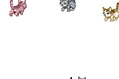

Catz (USA, Europe)
EEPROM 64K
Cartridge Identity
- Game Code
AN3E(FamilyAN3)- Header Title
CATZ- Maker / Revision
41/ rev0- ROM Size
- 4.0 MiB (4,194,304 B)
- Save Media
EEPROM 64K- SHA-256
3e1b7c2bb3d7ab5d223ab9944c5b7bff8558c35ebd42e948ecd109293e257b20- Engine / SDK Group
comm-002(145 families)
Screenshots


Observed Battery Save Layout
- Fill Byte & Active Size
0xFFfill · 1,144–1,144 / 8,192 B active (entropy 0.00 bits/B)- Active Offset Ranges
0x0–0x477(1 total)- ASCII Magic / Headers
- None detected
- Observed Variable Regions
- 0 bytes across 0 spans: None
- Candidate Checksum/Counter Spans
- None
ROM Assets, Compression & Audio
- BIOS Compression
- LZ77 (
0x10): 3 streams · RLE (0x30): 250 streams - ROM Pointer Tables
- 27 tables (23 pointing to validated compressed streams)
- SDK Backup Tags
EEPROM_V124
Hardware MMIO Subsystems
ppu_display0x80048b4,0x800ef40,0x800f7b0,0x800f84c,0x800fc9c,0x800fe88
Regional Variants & Revisions (Family AN3)
- Catz (Europe) (En,Fr,De,It) (
AN3X, 8 MiB) - Nakayoshi Pet Advance Series 3 - Kawaii Koneko (Japan) (
AN3J, 4 MiB) - Nakayoshi Pet Advance Series 3 - Kawaii Koneko (Japan) (Rev 1) (
AN3J, 4 MiB)